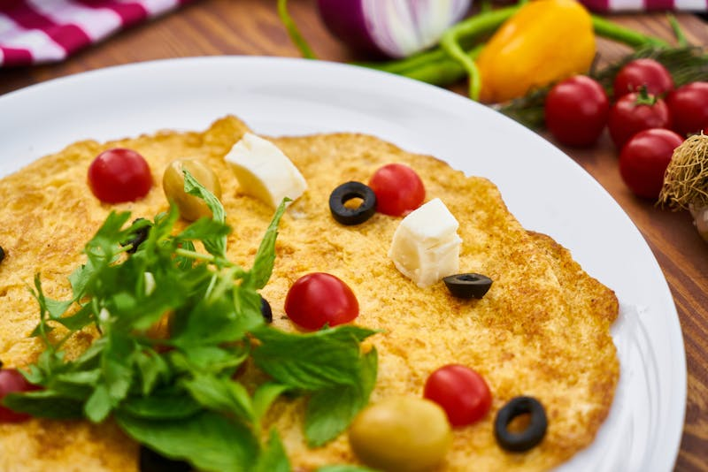

Eggs 101
Making breakfast eggceptional, one egg at a time.

Welcome to Eggs 101, your guide to mastering the art of the egg. Whether you are a college student who just discovered that eggs do not, in fact, cook themselves, or a home chef who is tired of producing rubber discs every morning, you have come to the right place. Eggs 101 will walk you through everything from picking the right egg at the store to plating a breakfast that would make a French chef shed a single tear of pride. Grab a spatula and an open mind, because things are about to get egg-citing.
What do you call a mischievous egg? A practical yolker.
All About Eggs
Did you know that not all eggs are created equal? From the humble white grocery store eggs to the fancy free-range eggs your neighbor brags about, there is a whole world of egg knowledge waiting for you. Learn about egg types, sizes, nutrition facts, doneness levels, and a surprisingly entertaining history of humanity's relationship with the egg.
Learn More
What do you call a self-obsessed egg? An egg-o-maniac.
Ways to Cook Eggs

There are more ways to cook an egg than you probably realize, and each method produces a completely different experience. Scrambled, fried, boiled, poached, deviled, omelets, etc. The Eggs 101 cooking guide breaks down each method step by step, so you can finally stop guessing when to flip, how long to boil, and why your poached eggs keep turning into egg drop soup. It's time to level up your egg game.
Start Cooking